Welcome to Sikkim
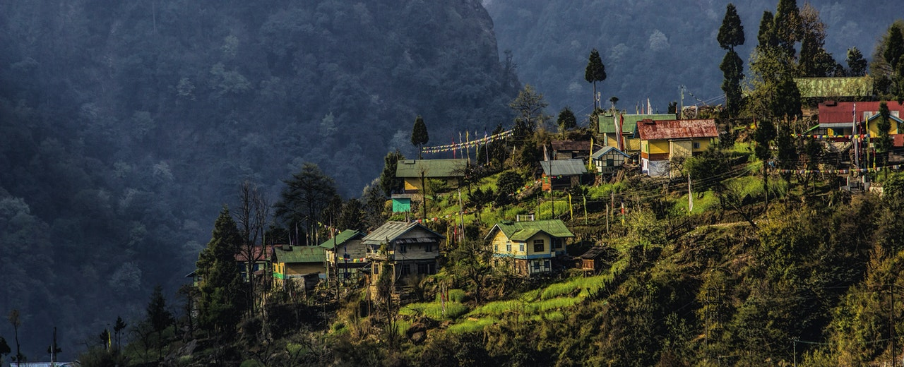
Sikkim was its own mountain kingdom till 1975 and still retains a very distinctive personality. The meditative, mural-filled traditional monasteries of Tibetan Buddhism coexist with Hindu shrines of the ever-growing Nepali community, with both religions creating some astonishing latter-day megasculptures to adorn the skyline.
Highlights of Sikkim
(Hover over the images)
| 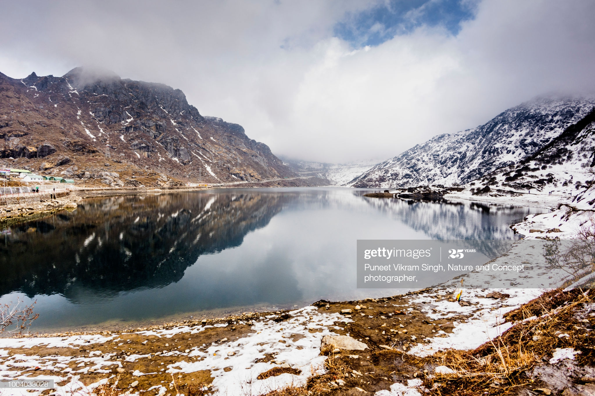
|
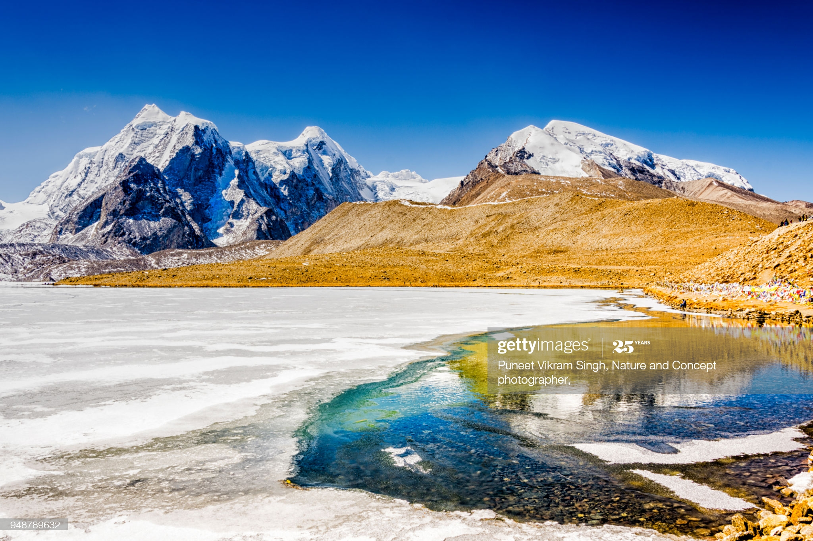
|
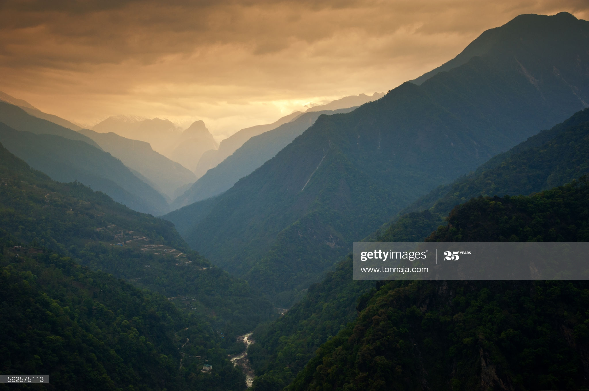
3.Mountain massif, North of Sikkim, India
|
Tourism
Hassle-free and warm-hearted, it's a state that's all too easy to fall in love with, explaining perhaps why permit regulations prevent foreigners staying too long or going too far. Clean, green and 'all organic' since 2016, Sikkim is mostly a maze of plunging, supersteep valleys thick with lush subtropical woodlands and rhododendron groves, rising in the north to the spectacular white-top peaks of the eastern Himalaya. When clouds clear, an ever-thrilling experience from many a ridge-top perch is spotting the world's third-highest mountain, Khangchendzonga (8598m), on the northwestern dawn horizon.
-
1. Tsomgo Lake
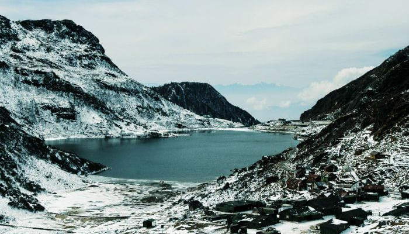
Tsomgo lake which is located just 38 km away from the capital city of Sikkim, Gangtok, is among the most popular tourist places in Sikkim. A snaky road through rocky mountain topography and strident mountains which takes you to the Tsomgo Lake is a lot of adventure in itself. If you are looking for best places to visit in East Sikkim then, you must explore this place on your trip. This is surely amongst the best places to see in Sikkim.
-
2. Yuksom
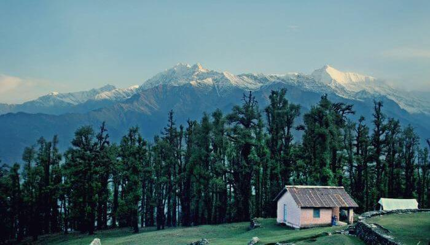
One of the most popular Sikkim tourist spots, Yuksom is an old historic town, which is considered to be amongst the best places to visit in West Sikkim bestowed with natural beauty and uninterrupted trail for trekkers. If you are looking forward to spending some quiet moments in the shadow of nature away from the hustle bustle of the city, then this is it.
-
3. Nathula Pass
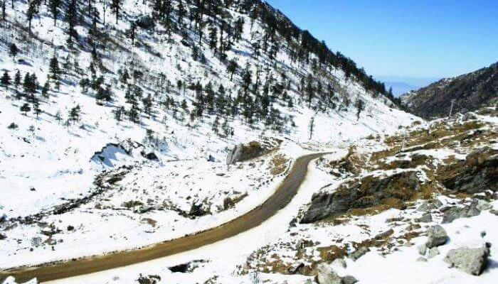
Nathula pass, located in the Himalayas, connects India with Tibet is considered to be amongst the best places to visit in Sikkim Gangtok. The pass, at 4,310 m above sea level forms a part of a side-shoot of the prehistoric Silk Road. Definitely one of the places to visit in Sikkim without fail. Plan a visit during the best time to visit Sikkim, and this mesmerizing place will stay in your memory forever!
-
4. Lachung, Lachen and Yumthang Valley
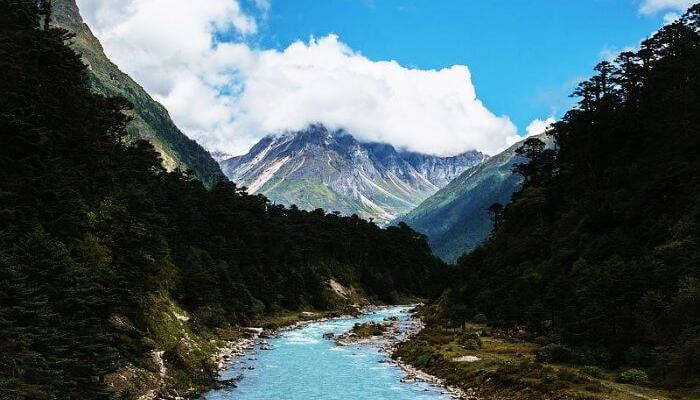
Lachen is a distant village in North Sikkim and the winter home for Tibetan nomadic tribes. Lachung is also a high altitude village of Tibetan and Bhutia people in North Sikkim. And Yumthang is a beautiful valley bounded by snowcapped mountains. All three are extremely beautiful tourist places in Sikkim. One must visit Lachung as it is the most famous among the list of places to visit in North Sikkim and for experiencing snowfall in Sikkim
-
5. Ravangla
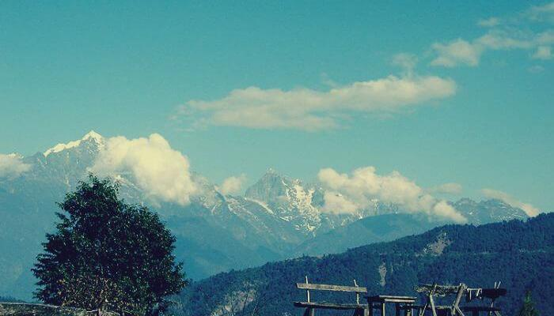
Furrowed by dense forests and outstandingly balanced on a ridge superintending an extensive swish of western Sikkim, Ravangla assures one of the most beautiful mountain views.It is a popular tourist place in Sikkim and draws many nature lovers every year.
-
6. Namchi
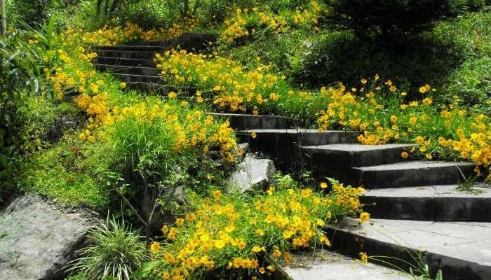
Namchi is blessed with fresh air which is fragmented with the aroma of lush flora. The beautiful sight of snowcapped mountains and the woodland mountain valleys adds to the scenery and makes it an important spot amongst the places to visit in South Sikkim.
-
7. Zuluk
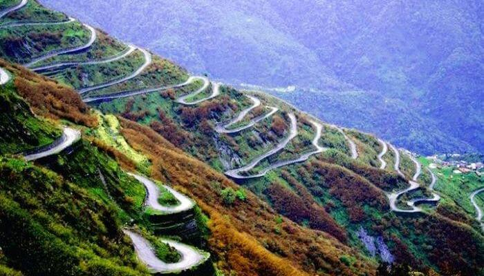
One of the offbeat Sikkim tourist places, Zuluk is a small village located at a high altitude and has a very empowering history due to its connection with the Silk Route. It promises great views of the snowcapped mountain ranges especially during winter and is a fabulous place to see for those looking for snowfall in Sikkim or looking for the best places to visit in Sikkim and Darjeeling.
-
8. Teesta River
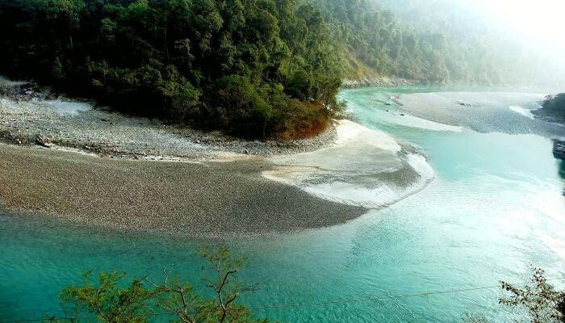
A different one among places to visit in Sikkim, Teesta River is stunning to look at when it is frozen in winters. During spring, however, the river is shimmering in the sun rays and displays a perfect habitat for blooming flowers.
-
9. Gangtok
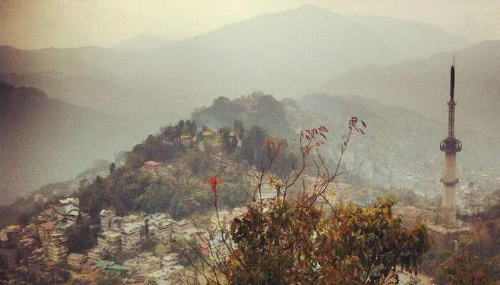
Gangtok is the capital city of Sikkim and has loads of gems in its kitty; you would be awestruck by the never ending walking trails, gorgeous silver-fir trees and most importantly the hospitality by the locals. Make sure it is on your list of places to visit in Sikkim.
Maps of Sikkim
-
1. Sikkim on the Indian Map
-
2. Road Map of Sikkim
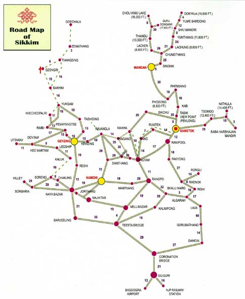
-
3. Trek Map of Sikkim
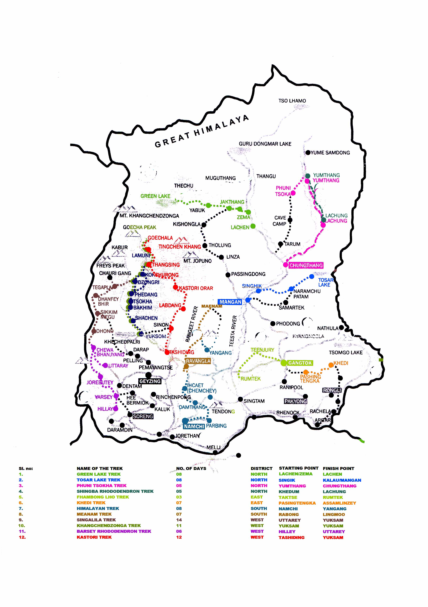
Food of Sikkim
Home to glimmering glaciers, beautiful meadows and thousands of varieties of flowers, Sikkim is one destination in India that is on the list of many travelers. The place is famous not only for its beauty, but also its culinary delights.
-
1. Momos
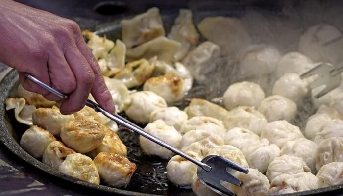
Momos is the ultimate favorite Tibetan delicacy amongst the people of this state. Not just Sikkim, Momos have expanded its base in the entire country as a scrumptious snack served in restaurants as well as street kiosks.
-
2. Thukpa
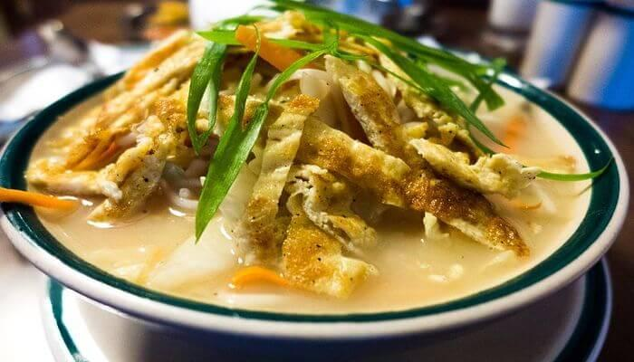
Another delicacy that can be tried while in the Indian state of Sikkim is the Thukpa. The dish is a flavorful noodle soup that has its origins in the eastern parts of Tibet. The street food in Sikkim is quite rich with Thukpa leading this culinary bandwagon. Not just the street kiosks, but almost every restaurant in the state serves this amazing dish.
-
3. Dal Bhaat
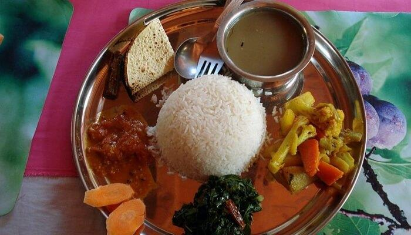
Dal Bhaat is a traditional Napalese dish that is quite a craze in many parts of Nepal, Bangladesh, and India. The combination is that of boiled rice and lentil soup. Many parts of India call this dish as Dal Chaawal. The Sikkimese population love their share of Dal Bhaat as their everyday meal. The lentil soup can differentiate in flavors from places to places with a certain ingredients remaining static everywhere, like salt, turmeric, and a little spice.
-
4. Dhindo
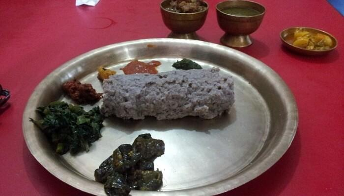
Dhindo is a Sikkim food speciality that is quite popular amongst the locals and tourists. The dish originates from Nepal, but is quite a rage in many parts of Sikkim and Darjeeling as well.
-
5. Phagshapa
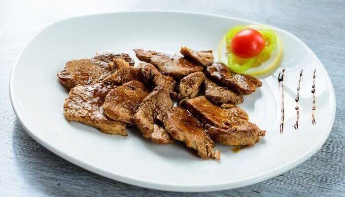
A culinary delight for the non-vegetarians, Phagshapa is a much-loved food item in Sikkimese cuisine. The main ingredient for this dish is the pork fat that is accompanied by radishes and red chillies.
-
6. Sha Phaley
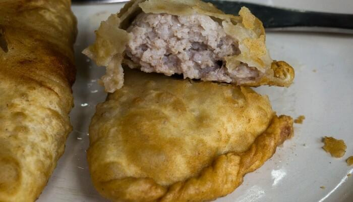
Sha Phaley is a combination of the deep fried flavors, bread, and a whole lot of minced meat. Originally a Tibetan dish, it is quite famous in Sikkim as well.The outcome is a crispy pastry with soft flavorful filling inside. With modern variations, ingredients like Tofu and Cheese have also been imbibed into the recipe. Vegetarians and vegans can relish the Tofu version and enjoy their food.
-
7. Gundruk and Sink
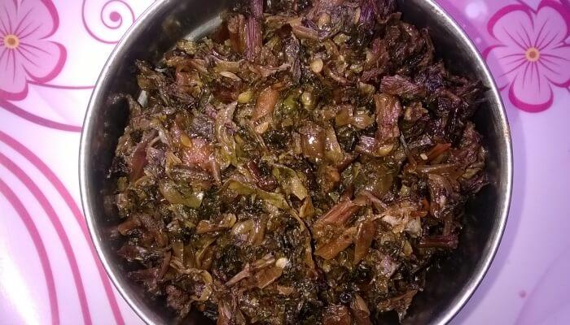
Gundruk and Sinki are dishes of Nepalese origin.Traditionally, this dish is made in an earthen pot. With modernisation, other utensils are now used for its preparation. Out of the many Sikkim food items, both these dishes are quite popular for their taste and health benefits.
-
8. Sael Roti
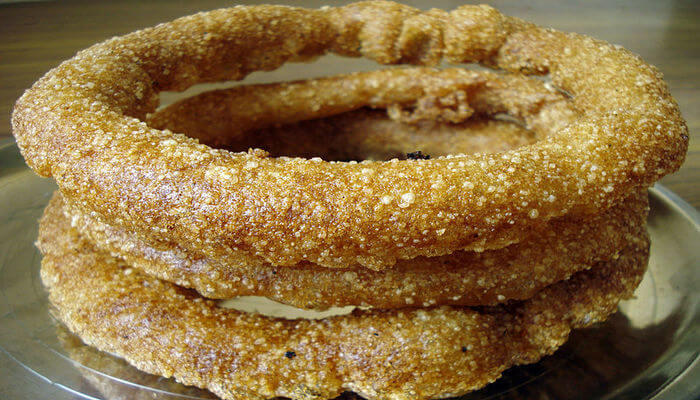
Sael Roti is a fried bread that is usually served along with Potato Curry.Even though the dish has its origins in Nepal and Tibet, it is quite popular in Sikkim as well due to the Nepalese and Tobetan influences in this Indian state. Satiate your taste palettes with this flavorful and amazing dish while you are holidaying in Sikkim.
-
9. Chang
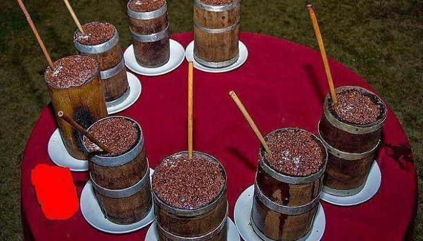
Chang is the fermented form of Millet and yeast which helps in fermentation process. Its other name is Thomba and is a traditional drink of Limbu people of Eastern Nepal. Chang is the locally brewed alcoholic beverage served in and sipped with the help of a bamboo pie. Sikkim has many local distilleries and these locally made alcohol is really cheap
-
10. Thenthuk
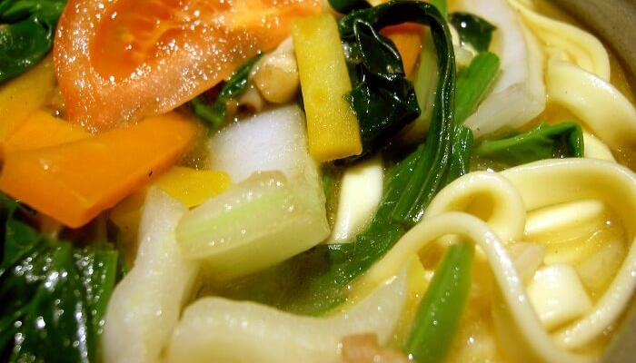
Thenthuk is yet another yummy soup. Prepared in the form of noodle soup made of vegetables, wheat flour and meat or mutton, it is one of the best Tibetan food in Sikkim. It is a favorite dinner for the people in Sikkim. To make it spicy, several restaurants use chilli powder while some people serve vegetable Thenthuk to keep it healthy. The origin of the Thenthuk is from Tibet.
Transportation
Almost All the modes of transportations are available to visit Sikkim. This Paradise on Earth is well connected by airways, railways and roadways. In spite of being a hilly state, transportation of Sikkim is comfortable and more frequent to enjoy the ride on the world’s most beautiful valley.
-
1. Airways
The airport located nearest to Sikkim is Bagdogra Airport of West Bengal which is only 124 Kms away from Gangtok. India’s national carrier, Indian Airlines including almost all other domestic airlines such as Jet Airlines, Air Deccan run regular flights from the important cities of India such as Kolkata, Delhi etc. Bagdogra is also connected with Gangtok by daily helicopter service operated by Sikkim Tourism development Corporation and it will take only 20 minutes to reach Gangtok from Bagdogra. This helicopter service is subjected to the weather conditions.
-
2. Railways
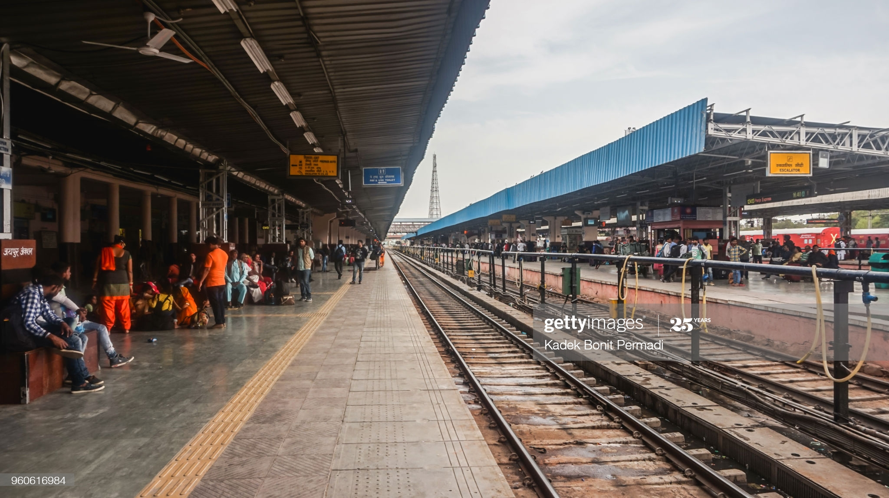
New Jalpaiguri and Siliguri are the two rail stations nearest to Sikkim located in West Bengal. NJP is 125 Kms and Siliguri is 114 Kms from Gangtok and is well connected to all the major cities. Ticket reservation facilities are available from Sikkim Nationalized Transport office in all working days.
-
3. Roadways
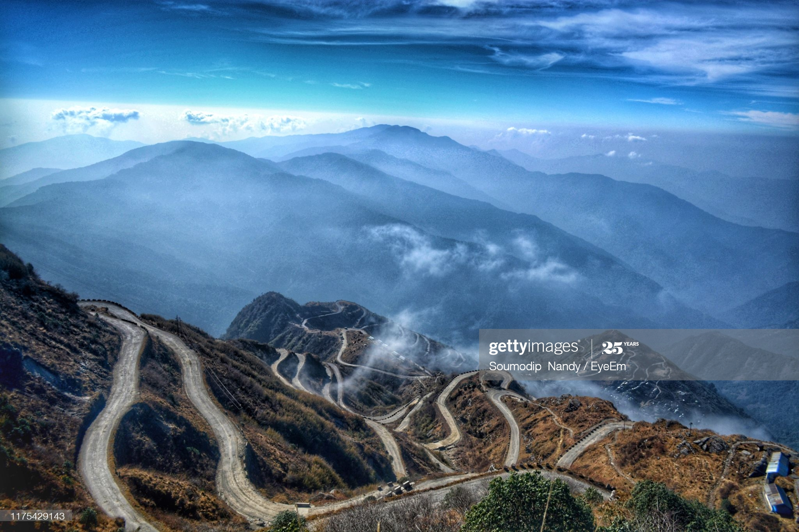
The lifeline of Sikkim, which is National Highway 31A connects gangtok with Siliguri and this picturesque highway runs through the lush green forests along the bank of river Teesta on one side and sky touching mountain ranges of Eastern Himalaya on other side. This unique ride of almost two hours will gives you the opportunity to enjoy the valley carpeted with numerous wild flowers. Regular bus service operated by S.N.T. and adequate number of private buses, jeeps and taxies are available from morning to evening at reasonable rate and you can have a very comfortable journey. You can also hire taxies and jeeps to travel to your destination of choice at reasonable rate. Most of the reputed destinations of siikim are interlinked by motor able all seasons roads.
-
Made By: TR2PS(X-B)
- Shashank Dubey
- Tanuj Chauhan
- Pranjal Rathi
- Rudra Gaur
- Parth Karamchandani